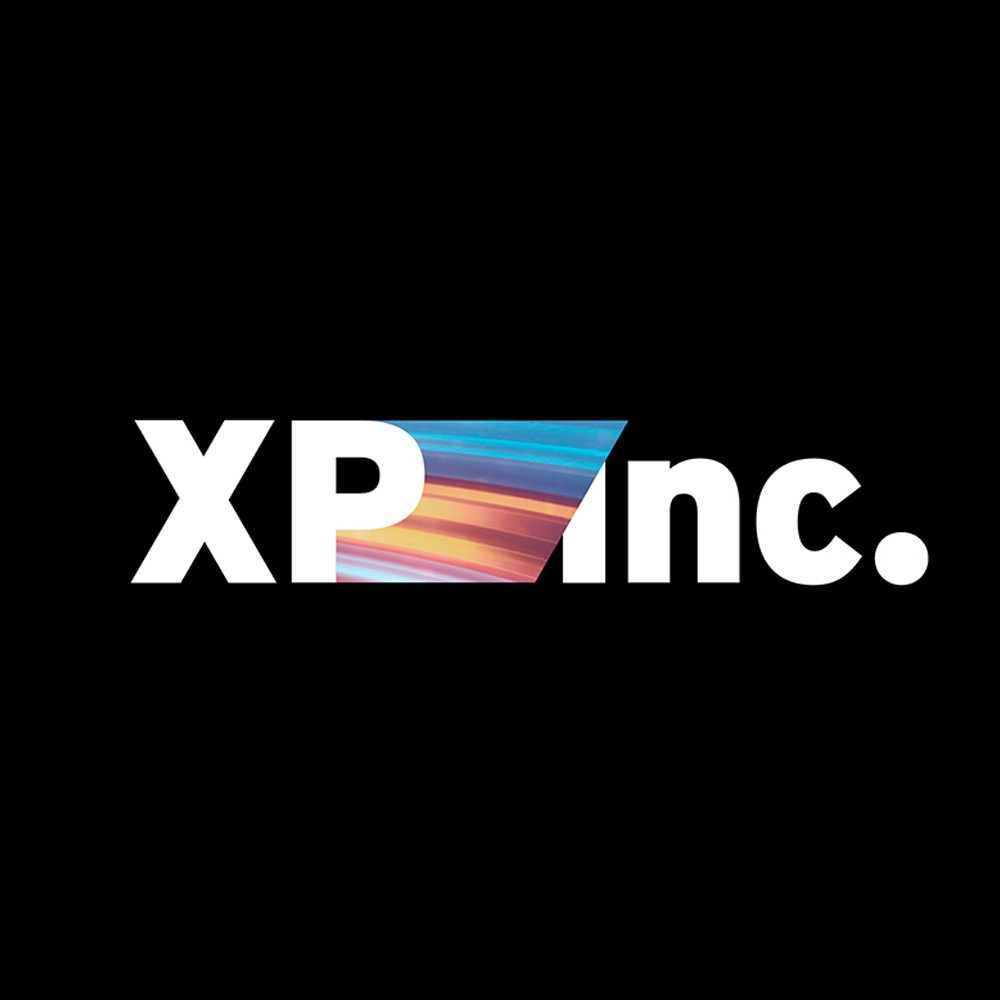
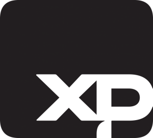
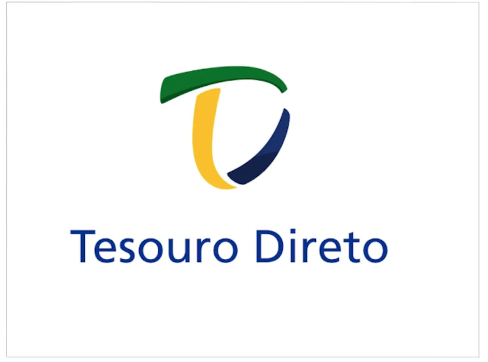
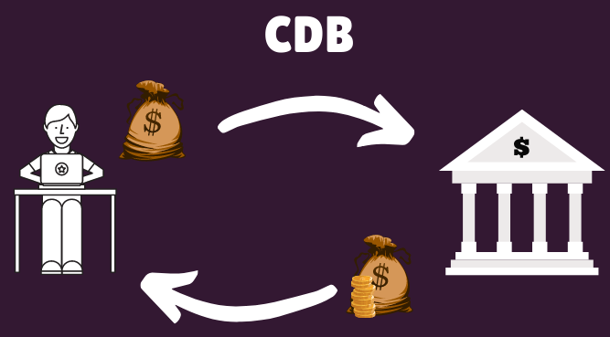
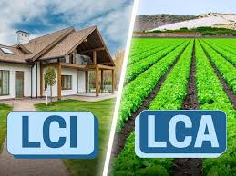
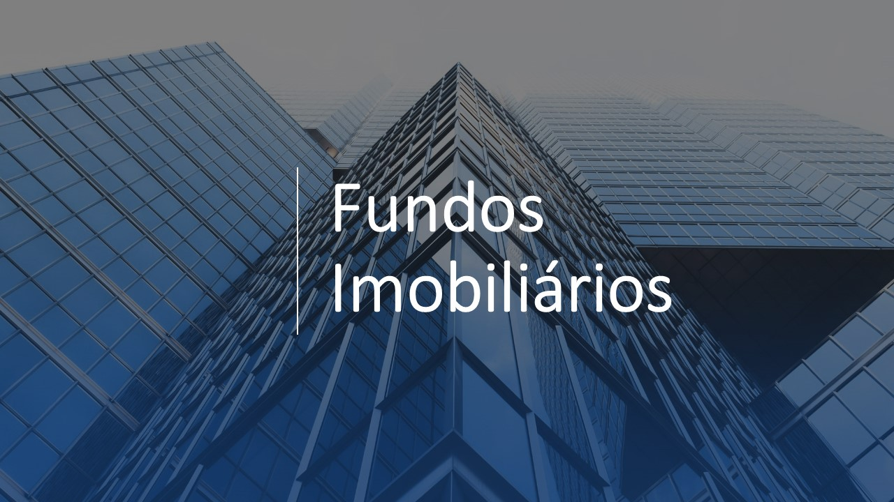

Quem é a XP?
A XP é uma plataforma de investimentos que intermedia a relação entre a B3 e você investidor, nela você possui um home broker com diversos produtos de investimento.


A XP é uma plataforma de investimentos que intermedia a relação entre a B3 e você investidor, nela você possui um home broker com diversos produtos de investimento.

Títulos públicos emitidos pelo Governo Federal, considerados os investimentos mais seguros do país. Ideal para quem busca rentabilidade previsível com baixo risco, começando a partir de R$ 30,00.

Empreste dinheiro ao banco e receba juros em troca. Com garantia do FGC em até R$ 250 mil por instituição, o CDB é uma excelente opção para diversificar sua reserva de emergência com segurança.

Letras de Crédito Imobiliário e do Agronegócio são investimentos isentos de Imposto de Renda para pessoa física. Combinam segurança do FGC com rentabilidade atrativa no médio e longo prazo.

Invista em imóveis de forma prática, sem precisar comprar um imóvel inteiro. Receba rendimentos mensais isentos de IR e aproveite a valorização de empreendimentos comerciais, logísticos e residenciais.

| Produto | Alocação Sugerida |
|---|---|
| Tesouro Selic | 30% |
| CDB Pós-Fixado | 25% |
| LCI / LCA | 25% |
| Fundos Imobiliários | 20% |